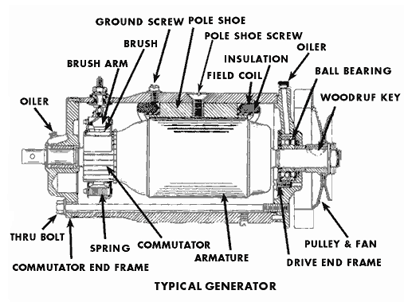

- repair
- troubleshooting
- information
What is Ohm’s Law? Ohms law states that, dissipation due to the resistance or it is the relation between voltage, current and resistance in an ideal conductor. A graph of voltage against the current is a straight line and the slope is the resistance. Ohm’s law is derived by V=IR Where, ‘V’ is voltage, that is measured in Volts ‘I’ is current, that is measured in Amps ‘R’ is resistance, that is measured in ohms
Generator is a machine that converts mechanical energy into electrical energy. It works based on principle of faraday law of electromagnetic induction. The faradays law states that whenever a conductor is placed in a varying magnetic field, EMF is induced and this induced EMF is equal to the rate of change of flux linkages. This EMF can be generated when there is either relative space or relative time variation between the conductor and magnetic field. So the important elements of a generator are:
Generators are basically coils of electric conductors, normally copper wire, that are tightly wound onto a metal core and are mounted to turn around inside an exhibit of large magnets. An electric conductor moves through a magnetic field, the magnetism will interface with the electrons in the conductor to induce a flow of electrical current inside it.
